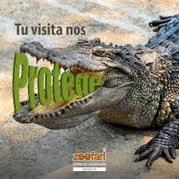
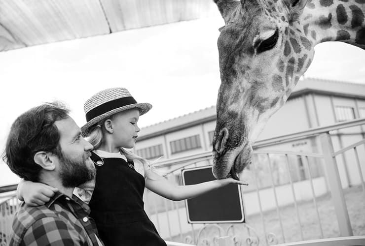

llegar al Zoofari de Morelos en transporte público? Solo debes de tomar la carretera federal Cuernavaca - Taxco en el km 55 a 40 minutos de Cuernavaca. Si no cuentas con auto, puedes tomar un autobús hacia Puente de Ixtla y de ahí tomar un taxi para recorrer el parque.
Ecoturismo y Sostenibilidad Ecoturismo y sostenibilidad son conceptos estrechamente relacionados que involucran viajes responsables, conservación del medio ambiente y bienestar comunitario. El ecoturismo se refiere al turismo que se centra en visitar áreas naturales, apoyar a las comunidades locales y promover los esfuerzos de conservación. La sostenibilidad, por otro lado, implica satisfacer las necesidades del presente sin comprometer la capacidad de las generaciones futuras para satisfacer sus propias necesidades.
taquilla@zoofari.com.mx o contabilidad@zoofari.com.mx,animales hay en el Zoofari Morelos? Invita Fitur a turistas a visitar zoofari, Centro de ... Con la visita se apoyan los programas de reproducción y conservación de especies como jaguares, águila real, flamencos, hipopótamos, cocodrilo del Nilo, ejemplo de esto es que desde hace más de 30 años han ayudado a preservar al rinoceronte blanco que está en peligro de extinción